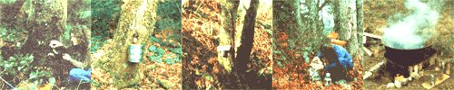

You see, any species of maple (as well as hickory, birch, alder, butternut, and black walnut trees) will produce sap which-though not so high in sugar content as A. saccharumcan be turned into syrup. The best of these sapmakersat least here in the Northwest-is the broad-leaved maple (Acer macrophyllum), but I've made birch and alder syrup, too ... and the procedures are the same regardless of which tree supplies the raw materials.
The length of the syrup season will vary from one locale to another (and even from tree to tree ... depending upon altitude and such). We begin looking for a flow of sap by the middle of January here in our neck of the woods and find that some trees "run" as late as early April. Yours may be either earlier or later than that. But they're all easy to spot: When daytime thaws begin, make a trial cut through the bark of a likely tree. If the slash oozes sap, it's time to start syrupin'.
First, drill a V- to 2"-deep, 3/4"-diameter hole in each of your sap trees ... just high enough up to hang a pail under. [EDITOR'S NOTE: In The Maple Sugar Book, Helen and Scott Nearing warn that tapping may damage trees that measure less than 12 inches in diameter two feet above the ground. Trees larger than this size, however, will "heal" in about a year.] Then, drive tight-fitting plastic or wooden tubes into the bores (be sure to leave a "collection space" in the back of each hole) and hang buckets, gallon cans, or whatever below the tubes with a wire and nail. Remember to cover the containers to keep rain, snow, bark, and so on out of the sap.
I've found that holes drilled into the "sunny" sides of the trees usually produce best, but this placement won't guarantee results ... don't be surprised if you hit a "dry well" occasionally, while sometimes a "gusher" will yield a gallon or two of sweet liquid in a day.
Small amounts of the sap that you collect can be cooked right in the kitchen. Just put the liquid in a large pot and condense it by steaming the fluid at about 170'F. You don't want the sap to boil, though, so be sure to reduce the flame as the volume of liquid goes down. Or, if you humidify your house by keeping a pan of water on the back of your wood stove, simply fill the container with sap instead of water. We've found-on a stove with a banked fire-that this method will produce small quantities of syrup overnight.
Larger batches of sap, on the other hand, must be steamed down in a cast-iron cauldron or a commercial syrup steaming pan and should be cooked in a very well ventilated room or-better yet-outside (otherwise the walls and ceilings of your house will be coated with sticky condensation).
Either way, be patient. It can take up to a full day to condense sap down to the right consistency. Finally, though, a cooled spoonful of the liquid will act "syrupy" . . . that's your signal to remove the pan from the stove, allow the sweetener to cool, and pour the finished product into jars.
Since each variety of sap tree yields its own distinctive and delicious syrup, why not make several types this year? Once your tastebuds have sampled this "honey that flows in trees", they'll never settle for anything less.
|
 PHOTOS BY THE AUTHOR [1] A tight-fitting plastic or wooden tube is driven into the 1""- to 2""-deep, 3/4""-diameter hole that has already been drilled in the tree. A small ""collection space"" must be left open between the end of the tube and the back of each hole when the tube is |
|
|